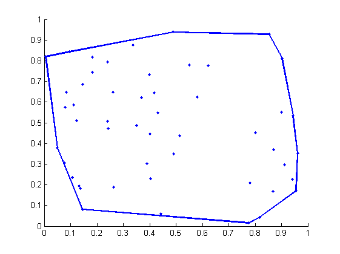

Contents
function demoOnionPeeling(varargin)
%DEMOONIONPEELING Onion peeling of a set of points % % Just a demo for the convexHull function % % Example % demoOnionPeeling % % See also % convexHull, polygons2d % % % ------ % Author: David Legland % e-mail: david.legland@grignon.inra.fr % Created: 2011-04-08, using Matlab 7.9.0.529 (R2009b) % Copyright 2011 INRA - Cepia Software Platform.
Data generation
% random points within unit square points = rand(50, 2); % display figure; hold on; drawPoint(points, '.');

Convex hull
% compute hull hull = convexHull(points); % display drawPolygon(hull, 'linewidth', 2);
Onion peeling
% initialize array of hulls layers = {}; nLayers = 0; % remove convex hull of the current set of points, and iterates until there % is no more point on the hull while size(points, 1) > 2 % compute current layer [hull inds] = convexHull(points); % add a layer nLayers = nLayers + 1; layers{nLayers} = hull; %#ok<AGROW> % remove vertices of the convex hull points(inds, :) = []; end % draw resulting layers for i = 1:nLayers drawPolygon(layers{i}); end